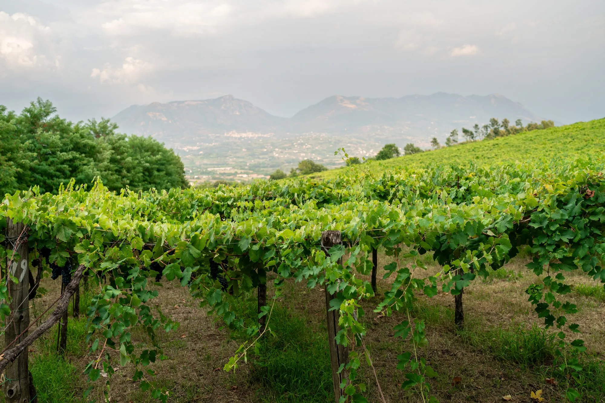

Un viaggio tra borghi, natura e identità: il racconto della nostra terra inizia qui.
17 aziende · 8 comuni · 1 filo
Voci della Strada
Persone vere,
storie vere.
Brevi video girati nei luoghi della DOC. Partono da soli, senza audio: tocca per aprirli.
La rete
Non una vetrina,
una rete.
Percorsi
Tre modi
di attraversarla.
La storia
Il filo
del tempo.
Eventi
Ci vediamo
tra i filari.
Magazine
Da leggere
con calma.
Aderisci e sostieni
Entra
nel filo.
Quote indicative, ricavate dal confronto con altre Strade del Vino italiane: gli importi reali li stabilisce l'assemblea dei soci.
Tessera sostenitore
Il tuo nome
Benvenuto nella rete della
Strada del Vino
Casavecchia di Pontelatone
Demo · tessera d'esempio